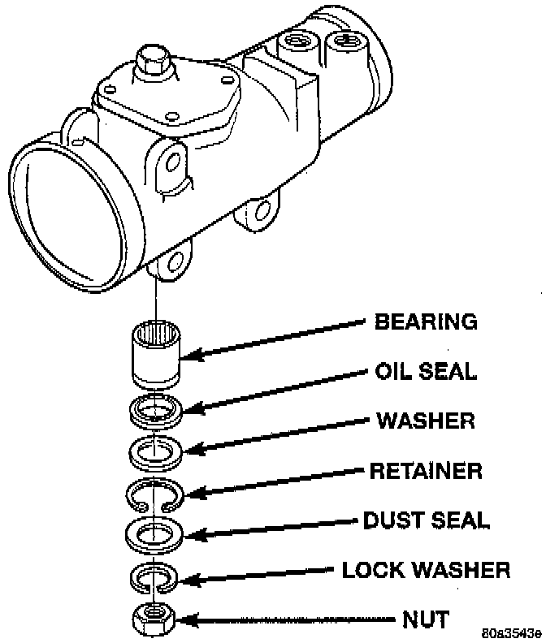

Pitman Shaft Seals Replacement In Vehicle

CAUTION: Use care not to score the housing bore when prying out seals and washers.
REMOVAL
1. Remove pitman arm from gear.
2. Clean exposed end of pitman shaft and housing. Use a wire brush to clean the shaft splines.
3. Remove dust seal.
4. Remove retaining ring with snap ring pliers.
5. Remove backup washer with screwdriver.
6. Start the engine and turn steering wheel fully to the LEFT. Hydraulic pressure will force the oil seal out.
7. Turn off engine and remove oil seal with screwdriver.
8. Inspect the housing for burrs and remove if necessary. Inspect the pitman shaft seal surface for roughness and pitting. If shaft is damaged it will have to be replaced.
INSTALLATION
1. Coat the seals and washers with grease.
2. Install oil seal with a suitable size deep socket.
3. Install backup washer.
4. Install the retainer ring with snap ring pliers.
5. Install dust seal with a suitable size deep socket.
6. Center the steering gear and install pitman arm.
7. Add power steering fluid, refer to Power Steering Pump Initial Operation.